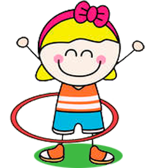

На главную
Обруч

Обруч — спортивный тренажёр кольцевидной формы. Используется как один из спортивных снарядов в упражнениях по художественной гимнастике. Обручи изготавливают из пластика, ПВХ или полиэтилена. Раньше обручи были деревянными. Диаметр обруча — 70-90 см (зависит от роста гимнастки). Обручи бывают однотонные или многоцветные. Многие гимнастки обклеивают их цветным скотчем для красоты.